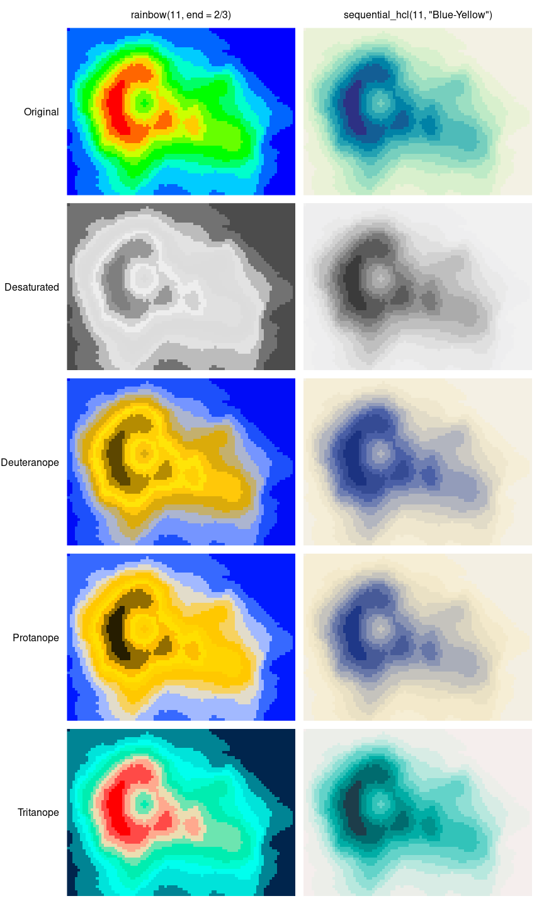
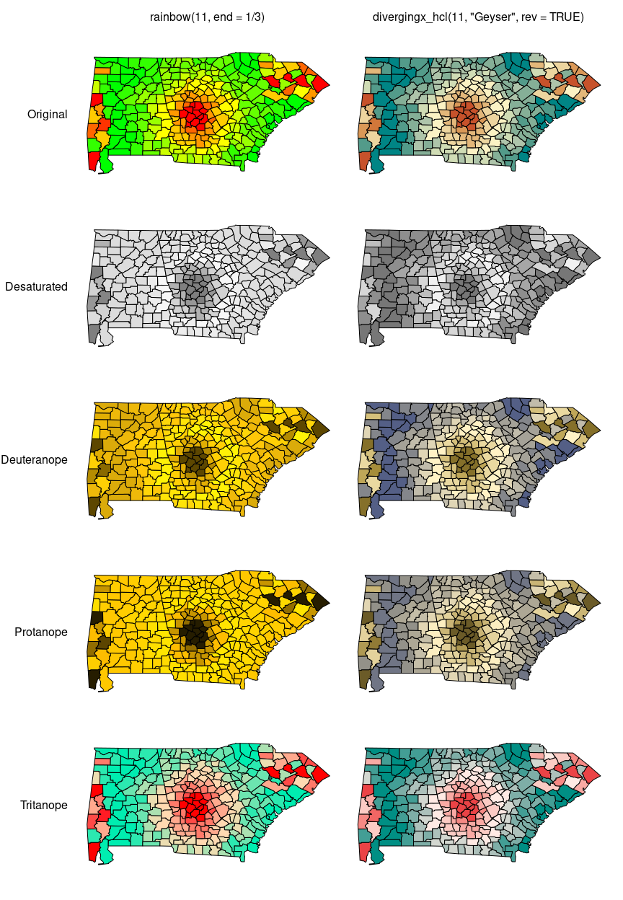

Color Vision Deficiency Emulation
color_vision_deficiency.RmdOverview
Using the physiologically-based model for simulating color vision deficiency (CVD) of Machado, Oliveira, and Fernandes (2009), deutanope, protanope, and tritanope vision can be emulated. The workhorse function to do so is simulate_cvd() which can take any vector of valid R colors and transform them according to a certain CVD transformation matrix and transformation equation. The transformation matrices have been established by Machado, Oliveira, and Fernandes (2009) and are provided in objects protanomaly_cvd, deutanomaly_cvd, and tritanomaly_cvd.
The convenience interfaces deutan(), protan(), and tritan() are the high-level functions for simulating the corresponding kind of color blindness with a given severity (calling internally).
For further guidance on color blindness in relation to statistical graphics see Lumley (2006) which accompanies the R package dichromat based on earlier emulation techniques.
Illustration: Heatmap with sequential palette
To illustrate that poor color choices can severely reduce the usefulness of a statistical graphic for readers with color vision deficiencies, we employ the infamous RGB rainbow color palette in a heatmap. In base R this can be generated by rainbow(11, end = 2/3) ranging from red (for high values) to blue (for low values).
The poor results for the RGB rainbow palette are contrasted with a proper sequential palette ranging dark blue to light yellow: sequential_hcl(11, "Blue-Yellow").
The statistical graphic employed for illustration is a heatmap of the well-known Maunga Whau volcano data from base R. This heatmap is easily available as demoplot(..., "heatmap") where ... is color vector to be used, e.g.,
## [1] "#FF0000FF" "#FF6600FF" "#FFCC00FF" "#CCFF00FF" "#66FF00FF"
## [6] "#00FF00FF" "#00FF66FF" "#00FFCCFF" "#00CCFFFF" "#0066FFFF"
## [11] "#0000FFFF"## [1] "#5D4700FF" "#B58C01FF" "#FFD005FF" "#FFE408FF" "#FFC809FF"
## [6] "#DBAB0AFF" "#C4B06DFF" "#ACB5D0FF" "#7595FFFF" "#1D50FBFF"
## [11] "#000CF7FF"and so on. To aid the interpretation of the heatmap a perspective display using only gray shades is included first.

Subsequently, all combinations of palette and color vision deficiency are visualized. Additionally, a grayscale version is created with desaturate().

This clearly shows how poorly the RGB rainbow performs while the HCL-based blue-yellow palette works reasonably well in all settings. The most important problem of the RGB rainbow is that it is not monotonic in luminance, making correct interpretation quite hard. Moreover, the red-green contrasts deteriorate substantially in the dichromatic emulations.
Illustration: Map with diverging palette
As another example for the poor performance of the RGB rainbow we employ a shaded map. This is available as demoplot(..., "map") and is based on county polygons for Alabama, Georgia, and South Carolina along with an artifical variable used for coloring.
Often the red-yellow-green RGB spectrum is used for a diverging palette with yellow as the neutral value. In base R this can be generated by rainbow(11, end = 1/3). However, this palette has again a number of weaknesses, especially that the green-yellow part of the palette almost collapses to the same color when desaturated or color blindness is emulated.
To illustrate that much more balanced palettes for the same purpose are available the Geyser palette (mimicked from CARTO 2018) is adopted: divergingx_hcl(11, "Geyser", rev = TRUE). This also goes from red via yellow to a green/blue and hence needs the divergingx_hcl() function (as opposed to diverging_hcl() which always uses a neutral gray).

While many versions of the RGB rainbow displays are hard to read because they do not bring out any differences in the green-yellow arm of the palette, the HCL-based palette works reasonably well in all settings. Only the grayscale version cannot bring out the different arms of the palette. However, at least both directions of deviation are visible even if they cannot be distinguished. This is preferable to the RGB rainbow which hides all differences in the green-yellow arm of the palette. (However, if grayscale printing is desired a sequential rather than a diverging palette is probably necessary.)
References
CARTO. 2018. “CARTOColors – Data-Driven Color Schemes.” https://carto.com/carto-colors/.
Lumley, Thomas. 2006. “Color Coding and Color Blindness in Statistical Graphics.” ASA Statistical Computing & Graphics Newsletter 17 (2): 4–7. http://stat-computing.org/newletter/issues/scgn-17-2.pdf.
Machado, Gustavo M., Manuel M. Oliveira, and Leandro A. F. Fernandes. 2009. “A Physiologically-Based Model for Simulation of Color Vision Deficiency.” IEEE Transactions on Visualization and Computer Graphics 15 (6): 1291–8. https://doi.org/10.1109/TVCG.2009.113.